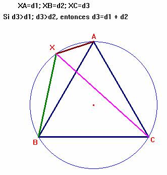
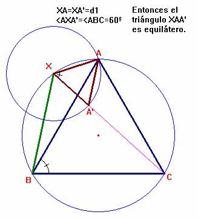
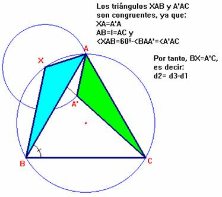
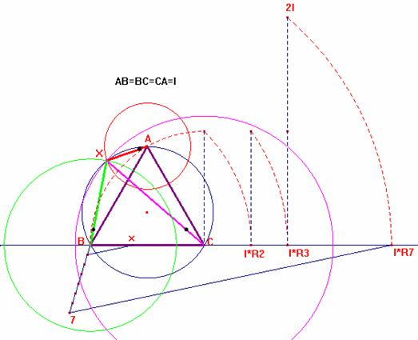

Problema 105.
En el desierto del Sahara y en tres puntos A, B, C, que forman los vértices de un triángulo equilátero de 700 km de lado, se encuentran tres vehículos cuyas velocidades respectivas son de 20 km/h, 40 km/h y 60 km/h, comunicados por radio con el centro de operaciones, reciben la orden de partir a reunirse lo antes posible. ¿Dónde está situado el punto de la reunión? (las motos siempre están en movimiento, precisión del editor)
Propuesto por la profesora Carmen Arriero Villacorta, profesora de Matemáticas del IES Ramón y Cajal
de Madrid, y asesora de Nuevas Tecnologías de la Información y Comunicación en el Centro de Apoyo al
Profesorado de Hortaleza-Barajas de la Comunidad
de Madrid.
Calendario Matemático (1999), 31 de Marzo. Selección por Germán Bernabeu Soria, del CEP de ELDA.
Solución de F. Damián Aranda Ballesteros profesor de Matemáticas del IES Blas Infante en Córdoba (5 de julio de 2003)
En este problema usaremos la siguiente propiedad:
Propiedad 1.-
La suma de las distancias desde un punto cualquiera de una circunferencia hasta los dos vértices más próximos de un triángulo equilátero inscrito en esta circunferencia, es igual a la distancia hasta el vértice más lejano.
Dem.-
|
 |
Determinamos el punto A' en el segmento XC de modo que XA=XA'. Así tenemos que:
 |
Como tenemos, según el enunciado, que las distancias recorridas por los distintos
vehículos en un cierto tiempo t, desde sus respectivos puntos base (Vértices
A, B y C) son iguales a 20t, 40t y 60t, cuando lleguen a encontrarse en un
mismo punto X-Punto de la reunión- sucederá que desde este punto X se tendrá
que:
60t = 20t +40t (: d1 = d2 + d3 )

Por la Propiedad 1, sabemos que todo punto de la circunferencia circunscrita al triángulo ABC verifica esta igualdad.
Luego si el punto X se encontrase en la circunferencia circunscrita al triángulo ABC, su determinación debería ser la siguiente:
XA=x=20t
XB=2x=40t
<BXA=120º
Por el teorema del coseno:
l2 = x2 + (2x)2 -2×(2x)×x×cos 120º; l2 = 7×x2.
En definitiva, .
La forma geométrica de encontrar el punto X se sigue en la siguiente ilustración:

Saludos de F. Damián Aranda Ballesteros.